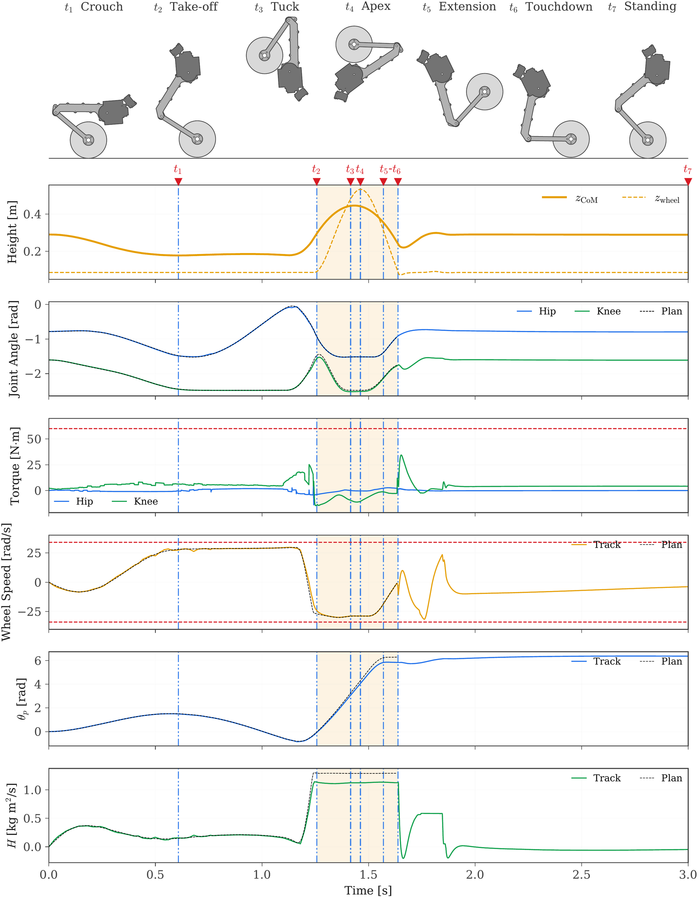

Overview
OTTO rolls on two wheels like a balancing robot and uses its two-joint legs to change height and leave the ground. This project makes it perform a full forward somersault, where it crouches, pushes off, rotates a full turn in the air, lands on its wheels, and recovers to a stable stance.
The robot is underactuated at the wheel contact, so body pitch can only come through the ground reaction. Once it leaves the ground its angular momentum is fixed, which means everything about the landing is decided at push-off. Earlier somersault controllers either hand-design the take-off and landing states with fixed phase durations, or impose a full terminal state without reporting the touchdown rate it demands. This project plans the whole maneuver around the question of what landing the recovery controller can actually accept.
Process
Model the robot
The full-order dynamics of the four leg joints and two wheels are built with Pinocchio, so the planner and the controller share one model.
Plan the whole maneuver
Stance and flight are solved as one Hermite-Simpson collocation problem in CasADi, with both phase durations left free.
Define a landing the robot can catch
Instead of fixing an exact touchdown state, the plan bounds the touchdown pitch rate and centers the landing pose on the recovery controller's own equilibrium.
Track it with NMPC
During stance, an acados NMPC re-solves the reference every cycle. Its torque correction is limited to a margin the plan reserves, so tracking never fights the actuator limits.
Stress-test in simulation
Mass error, IMU noise, lower ground and extra payload show how much the plan and the tracker can each absorb. The same controllers run in MuJoCo and on the robot through ros2_control.
Results
The somersault completes in simulation. Two of the three nominal trials complete, and every completed trial lands with a pitch rate inside the 1.2 rad/s cap of the plan and recovers to standing. The somersault also completes in part of the trials with a wrong torso mass or IMU noise, and in all trials with lower ground. With a torso 60% heavier, the unchanged plan completes one of three trials while the re-solved plan completes all three.
Table 1. Nominal somersault, range over the completed trials
| Metric | Min | Max |
|---|---|---|
| Rotation (deg) | 347.2 | 348.9 |
| Touchdown Pitch Rate (rad/s) | −0.433 | +0.624 |
| Flight Duration (s) | 0.376 | 0.394 |
| Peak Tilt After Touchdown (deg) | 19.8 | 36.5 |
Table 2. Rotation error under model, sensing, ground and load changes, mean over the completed trials
| Case | Level | Rotation Error (deg) | Completed |
|---|---|---|---|
| Torso Mass Belief | −40% | −14.4 | 4 of 5 |
| Torso Mass Belief | +40% | −0.9 | 5 of 5 |
| IMU Noise | 100% | −4.9 | 2 of 3 |
| Landing Surface | −5 cm | −10.4 | 3 of 3 |
| Landing Surface | −10 cm | −15.6 | 3 of 3 |
| Added Load, Fixed Plan | +60% | −14.2 | 1 of 3 |
| Added Load, Re-Solved Plan | +60% | −4.5 | 3 of 3 |
